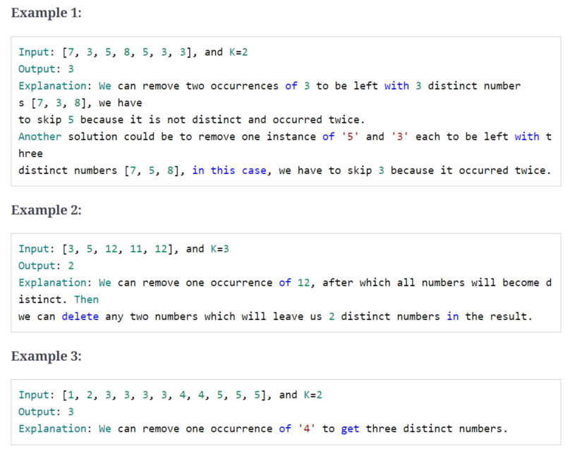
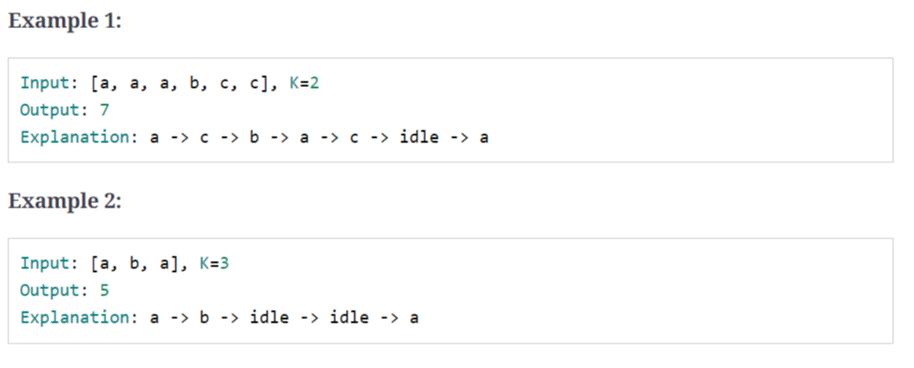

Pattern-14 Top K Elements
1、introduction
最大/最小/出现次数 的 第/前 K个元素，常用heap。
2、top k numbers
给定未排序数组和K值，求前K个大的元素
input: [3, 1, 5, 12, 2, 11] ,K=3
output: [5, 12, 11]
input: [5, 12, 11, -1, 12] ,K=3
output: [5, 12, 12]
vector<int> findLargestNumbers(const vector<int> &nums, int k) {
priority_queue<int, vector<int>, greater<int>> minHeap;
vector<int> result;
for (int i = 0; i < k; i++) {
minHeap.push(nums[i]);
}
for (int i = k; i < nums.size(); i++) {
if (nums[i] > minHeap.top()) {
minHeap.pop();
minHeap.push(nums[i]);
}
}
for (int i = 0; i < k; i++) {
result.push_back(minHeap.top());
minHeap.pop();
}
return result;
}
Time Complexity : O(N * log K)
Space Complexity : O(K)
3、kth smallest number
给定未排序数组和K值，求第K个小的元素
input: [1, 5, 12, 2, 11, 5] ,K=3
output: 5
explanations: 1 2 5 5 11 12
input: [1, 5, 12, 2, 11, 5] ,K=4
output: 5
explanations: 1 2 5 5 11 12
input: [5, 11, 12, -1, 12] ,K=3
output: 11
explanations: -1 5 11 12 12
code:
int kthSmallestNumber(const vector<int> &nums, int k) {
priority_queue<int> maxHeap;
for (int i = 0; i < k; i++) {
maxHeap.push(nums[i]);
}
for (int i = k; i < nums.size(); i++) {
if (nums[i] < maxHeap.top()) {
maxHeap.pop();
maxHeap.push(nums[i]);
}
}
return maxHeap.top();
}
Time Complexity : O(N * log K)
Space Complexity : O(K)
使用小顶堆：
code：
int kthSmallestNumberUseMinHeap(const vector<int> &nums, int k) {
priority_queue<int, vector<int>, greater<int>> minHeap;
for (int i = 0; i < nums.size(); i++) {
minHeap.push(nums[i]);
}
for (int i = 0; i < k - 1; i++) {
minHeap.pop();
}
return minHeap.top();
}
Time Complexity : O(N + K log N)
Space Complexity : O(N)
4、k closest points to the origin
给定一组二位坐标点和K值，求前K个离原点最近的的点
input: [[1, 2], [1, 3]], k=1
output: [[1, 2]]
input: [[1, 3], [3, 4], [2, -1]], k=2
output: [[1, 3],[2, -1]]
code:
struct Point {
int x, y;
Point(int _x, int _y) : x(_x), y(_y) {};
};
int distance(Point p) {
return p.x * p.x + p.y + p.y;
}
bool operator<(Point a, Point b) {
//return a.x*a.x +a.y*a.y > b.x*b.x+b.y+b.y;
return distance(a) < distance(b);
}
vector<Point> findKthClosestPoints(const vector<Point> &Points, int k) {
priority_queue<Point> maxHeap;
vector<Point> result;
for (int i = 0; i < k; i++) {
maxHeap.push(Points[i]);
}
for (int i = k; i < Points.size(); i++) {
if (distance(Points[i]) < distance(maxHeap.top())) {
maxHeap.pop();
maxHeap.push(Points[i]);
}
}
for (int i = 0; i < k; i++) {
result.push_back(maxHeap.top());
maxHeap.pop();
}
return result;
}
Time Complexity : O(N * log K)
Space Complexity : O(K)
5、connect ropes
把N段不同绳子连接成一段长绳子，使得cost最小
连接两段绳子的cost= 两段绳子的长度和
input: [1, 3, 11, 5]
output: 33
explanations: cost1: 1 + 3 = 4; cost2: 4 + 5 = 9 ; cost3 :9 + 11 =20 ;totalcost: 4 + 9 + 20 = 33
input: [3, 4, 5, 6]
output: 36
explanations: cost1: 3 + 4 = 7; cost2: 5 + 6 = 11 ; cost3 :7 + 11 =18 ;totalcost: 7 + 11 + 18 = 36
input: [1, 3, 11, 5, 2]
output: 42
explanations: cost1: 1 + 2 = 3; cost2: 3 + 3 = 6 ; cost3 :6 + 5 =11 ;cost4 :11 + 11 =22 ; totalcost: 3 +6 + 11 + 12 = 42
code:
int minimumCostConnectRopes(const vector<int> &nums) {
int result = 0;
int temp = 0;
priority_queue<int, vector<int>, greater<int>> minHeap;
for (int i = 0; i < nums.size(); i++) {
minHeap.push(nums[i]);
}
while (minHeap.size() > 1) {
temp = minHeap.top();
minHeap.pop();
temp += minHeap.top();
minHeap.pop();
result += temp;
minHeap.push(temp);
}
return result;
}
Time Complexity : O(N * log N)
Space Complexity : O(N)
6、top k frequent numbers
给定未排序数组和K值，求出现次数前K的数
input: [1, 3, 5, 12, 11, 12, 11], k=2
output: [12, 11]
explanations: 12(2), 11(2) , 其他1次
input: [5, 12, 11, 3, 11], k=2
output: [11, 5] 或[11, 12] 或[11, 3]
explanations: 11(2), 其他1次
struct cmp_greater {
bool operator()(const pair<int, int> &x, const pair<int, int> &y) {
return x.second > y.second;
}
};
vector<int> findTopKFrequencyNumbers(const vector<int> &nums, int k) {
unordered_map<int, int> numFrequencyMap;
for (auto n:nums) {
numFrequencyMap[n]++;
}
priority_queue<pair<int, int>, vector<pair<int, int>>, cmp_greater> minHeap;
for (auto entry: numFrequencyMap) {
minHeap.push(entry);
if (minHeap.size() > k) {
minHeap.pop();
}
}
vector<int> topNumbers;
while (!minHeap.empty()) {
topNumbers.push_back(minHeap.top().first);
minHeap.pop();
}
return topNumbers;
}
Time Complexity : O(N + N * log K)
Space Complexity : O(N)
7、frequency sort
给定字符串，按照字符出现的次数降序排列
input: "Programming"
output: "rrggmmPiano"
input: "abcbab"
output: "bbbaac"
code:
struct cmp_smaller {
bool operator()(const pair<char, int> &x, const pair<char, int> &y) {
return x.second < y.second;
}
};
string sortCharacterByFrequency(const string &str) {
unordered_map<char, int> characterFrequencyMap;
for (char chr:str) {
characterFrequencyMap[chr]++;
}
priority_queue<pair<int, int>, vector<pair<int, int>>, cmp_smaller> maxHeap;
for (auto entry :characterFrequencyMap) {
maxHeap.push(entry);
}
string sortedString = "";
while (!maxHeap.empty()) {
auto entry = maxHeap.top();
maxHeap.pop();
for (int i = 0; i < entry.second; i++) {
sortedString += entry.first;
}
}
return sortedString;
}
Time Complexity : O(N * log N)
Space Complexity : O(N)
8、kth largest number in a stream
设计一个类，求数据流中的最大值
9、k closest numbers
给定排序的数组，及整数K和X。求数组中K个接近X的数，将返回的数排序，X不一定在原数组中。
input: [5, 6, 7, 8, 9] , k=3 ,x=7
output: [6, 7 , 8]
input: [2 ,4 ,5 ,6 ,9] ,k=3 ,x=6
output: [4, 5, 6]
input: [2, 4, 5, 6, 9] ,k=3 ,x=10
output: [5, 6, 9]
code:
struct cmp_greater {
bool operator()(const pair<int, int> &x, const pair<int, int> &y) {
return x.first > y.first;
}
};
int binarySearch(const vector<int> &arr, int target) {
int low = 0;
int high = arr.size() - 1;
while (low <= high) {
int mid = low + (high - low) / 2;
if (target = arr[mid]) {
return mid;
} else if (target > arr[mid]) {
low = mid + 1;
} else {
high = mid - 1;
}
}
if (low > 0) {
return low - 1;
}
return low;
}
vector<int> findClosestElements(const vector<int> &arr, int k, int x) {
int index = binarySearch(arr, x);
int low = index - k;
int high = index + k;
low = max(low, 0);
high = min((int) arr.size() - 1, high);
priority_queue<pair<int, int>, vector<pair<int, int>>, cmp_greater> minHeap;
for (int i = low; i <= high; i++) {
minHeap.push(make_pair(abs(arr[i] - x), i));
}
vector<int> result;
for (int i = 0; i < k; i++) {
result.push_back(arr[minHeap.top().second]);
minHeap.pop();
}
sort(result.begin(), result.end());
return result;
}
Time Complexity : O( log N + K * log K)
Space Complexity : O(K)
双指针法：
int binarySearch(const vector<int> &arr, int target) {
int low = 0;
int high = arr.size() - 1;
while (low <= high) {
int mid = low + (high - low) / 2;
if (target = arr[mid]) {
return mid;
} else if (target > arr[mid]) {
low = mid + 1;
} else {
high = mid - 1;
}
}
if (low > 0) {
return low - 1;
}
return low;
}
vector<int> findClosestElements2(const vector<int> &arr, int k, int x) {
deque<int> result;
int index = binarySearch(arr, x);
int leftPointer = index;
int rightPointer = index + 1;
for (int i = 0; i < k; i++) {
if (leftPointer >= 0 && rightPointer < (int) arr.size()) {
int diff1 = abs(x - arr[leftPointer]);
int diff2 = abs(x - arr[rightPointer]);
if (diff1 <= diff2) {
result.push_back(arr[leftPointer]);
leftPointer--;
} else {
result.push_back(arr[rightPointer++]);
}
} else if (leftPointer >= 0) {
result.push_back(arr[leftPointer--]);
} else if (rightPointer < (int) arr.size()) {
result.push_back(arr[rightPointer++]);
}
}
vector<int> resultvec;
move(begin(result), end(result), back_inserter(resultvec));
sort(resultvec.begin(), resultvec.end());
return resultvec;
}
Time Complexity : O(K + log N)
Space Complexity : O(1)
10、maximum distinct elements
给定数组和K值，删除K个数后，求剩余的不重复的数的最大个数

code:
struct cmp_greater {
bool operator()(const pair<int, int> &x, const pair<int, int> &y) {
return x.second > y.second;
}
};
int maximumDistinctElements(const vector<int> &nums, int k) {
int distinctElementsCount = 0;
if (nums.size() <= k) {
return distinctElementsCount;
}
unordered_map<int, int> numFrequencyMap;
for (auto num:nums) {
numFrequencyMap[num]++;
}
priority_queue<pair<int, int>, vector<pair<int, int>>, cmp_greater> minHeap;
for (auto entry:numFrequencyMap) {
if (entry.second == 1) {
distinctElementsCount++;
} else {
minHeap.push(entry);
}
}
while (k > 0 && !minHeap.empty()) {
auto entry = minHeap.top();
minHeap.pop();
k -= entry.second - 1;
if (k >= 0) {
distinctElementsCount++;
}
}
if (k > 0) {
distinctElementsCount -= k;
}
return distinctElementsCount;
}
Time Complexity : O( N * log N + K * log K)
Space Complexity : O(N)
11、sum of elements
给定数组和K1、K2值，求第k1小和第k2小之间元素和
input: [1 ,3 ,12 ,5 ,15 ,11] , k1= 3, k2 = 6
output: 23
explanations:3th->5,6th->15 ,11(4th) + 12(5th) = 23
input: [3, 5, 8, 7] , k1=1, k2 = 4
output: 12
explanations:1th->3,4th->8 ,5(2th) + 7(3th) = 12
code:
int sumOfElements(const vector<int> &nums, int k1, int k2) {
int sum = 0;
priority_queue<int, vector<int>, greater<int>> minHeap;
for (auto num:nums) {
minHeap.push(num);
}
for (int i = 0; i < k1; i++) {
minHeap.pop();
}
for (int i = 0; i < k2 - k1 - 1; i++) {
sum += minHeap.top();
minHeap.pop();
}
return sum;
}
Time Complexity : O(N * log N)
Space Complexity : O(N)
大顶堆方法：
int sumOfElements2(const vector<int> &nums, int k1, int k2) {
int sum = 0;
priority_queue<int> maxHeap;
for (int i = 0; i < nums.size(); i++) {
if (i < k2 - 1) {
maxHeap.push(nums[i]);
} else if (nums[i] < maxHeap.top()) {
maxHeap.pop();
maxHeap.push(nums[i]);
}
}
for (int i = 0; i < k2 - k1 - 1; i++) {
sum += maxHeap.top();
maxHeap.pop();
}
return sum;
}
Time Complexity : O(N * log K2)
Space Complexity : O(K2)
12、rearrange string
给定字符串，重新排列，使得相同字符不在一起
input: "aappp"
output: "papap"
input: "Programming"
output: "rgmrgmPiano",或"gmringmrPoa",等等
input: "aapa"
output: ""
code:
struct cmp_smaller {
bool operator()(const pair<char, int> &x, const pair<char, int> &y) {
return x.second < y.second;
}
};
string rearrangeString(const string &str) {
unordered_map<char, int> charFrequencyMap;
priority_queue<pair<char, int>, vector<pair<char, int>>, cmp_smaller> maxHeap;
string resultString = "";
pair<char, int> previousEntry(-1, -1);
for (auto chr:str) {
charFrequencyMap[chr]++;
}
for (auto entry:charFrequencyMap) {
maxHeap.push(entry);
}
while (!maxHeap.empty()) {
pair<char, int> currentEntry = maxHeap.top();
maxHeap.pop();
if (previousEntry.second > 0) {
maxHeap.push(previousEntry);
}
resultString += currentEntry.first;
currentEntry.second--;
previousEntry = currentEntry;
}
return resultString.length() == str.length() ? resultString : "";
}
Time Complexity : O(N * log N)
Space Complexity : O(N)
13、rearrange string k distance apart
给定字符串和K值，重新排列字符串，使得相同字符至少相隔k个字符
input: "mmpp", k=2
output: "mpmp" 或 "pmpm"
input: "aappa", k=3
output: ""
input: "Programming", k=3
output: "rgmPrgmiano" 或 "gmrPagimnor" 等等
code：
struct cmp_smaller {
bool operator()(const pair<char, int> &x, const pair<char, int> &y) {
return x.second < y.second;
}
};
string reorganizeString(const string &str, int k) {
unordered_map<char, int> charFrequencyMap;
priority_queue<pair<char, int>, vector<pair<char, int>>, cmp_smaller> maxHeap;
string resultString = "";
queue<pair<char, int>> queue;
if (k <= 1) {
return str;
}
for (auto chr:str) {
charFrequencyMap[chr]++;
}
for (auto entry:charFrequencyMap) {
maxHeap.push(entry);
}
while (!maxHeap.empty()) {
pair<char, int> currentEntry = maxHeap.top();
maxHeap.pop();
resultString += currentEntry.first;
currentEntry.second--;
queue.push(currentEntry);
if (queue.size() == k) {
auto entry = queue.front();
queue.pop();
if (entry.second > 0) {
maxHeap.push(entry);
}
}
}
return resultString.length() == str.length() ? resultString : "";
}
Time Complexity : O(N * log N)
Space Complexity : O(N)
14、scheduling tasks
任务调度，给定一组任务和K值，一个任务执行后必须间隔K 段时间，求完成调度最小总时间，当任务不能调度时用idle

code:
struct cmp_smaller {
bool operator()(const pair<char, int> &x, const pair<char, int> &y) {
return x.second < y.second;
}
};
int scheduleTask(const vector<char> &task, int k) {
int intervalCount = 0;
unordered_map<char, int> charFrequencyMap;
priority_queue<pair<char, int>, vector<pair<char, int>>, cmp_smaller> maxHeap;
for (auto chr:task) {
charFrequencyMap[chr]++;
}
for (auto entry:charFrequencyMap) {
maxHeap.push(entry);
}
while (!maxHeap.empty()) {
vector<pair<char, int>> waitList;
int n = k + 1;
for (; n > 0 && !maxHeap.empty(); n--) {
intervalCount++;
auto currentEntry = maxHeap.top();
maxHeap.pop();
if (currentEntry.second > 1) {
currentEntry.second--;
waitList.push_back(currentEntry);
}
}
for (auto w:waitList) {
maxHeap.push(w);
}
if (!maxHeap.empty()) {
intervalCount += n;
}
}
return intervalCount;
}
Time Complexity : O(N * log N)
Space Complexity : O(N)
15、frequency stack
设计类
{kind=link}